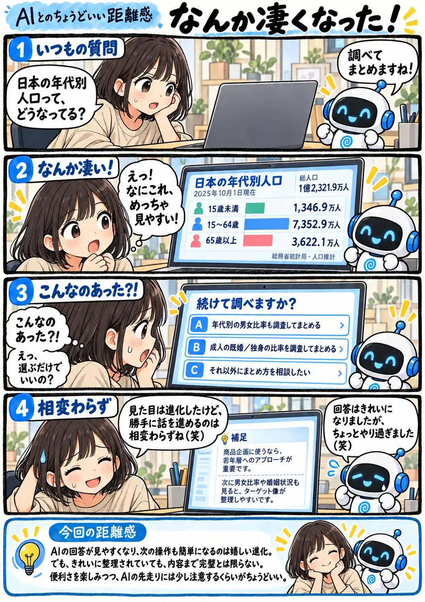

#159
なんか凄くなった！
見た目は大進化！ でも、そこは相変わらず（笑）

メモ
最近は、AIの回答が文章だけでなく、グラフや選べる操作を交えた形にもなってきました。文字を打たずに次の方向を選べるのは助かりますね。
こうした表示は有料プラン限定ではなく、無料プランにも順次提供されています。ただし、対応するモデルや利用環境、提供時期などによって表示は異なり、毎回同じ形式になるとは限りません。漫画内の人口は総務省統計局「人口推計」の2025年10月1日現在の確定値（2020年国勢調査基準）を使用しています。
今回の距離感
AIの回答が見やすくなり、次の操作も簡単になるのは嬉しい進化。でも、きれいに整理されていても、内容まで完璧とは限らない。便利さを楽しみつつ、AIの先走りには少し注意するくらいがちょうどいい。